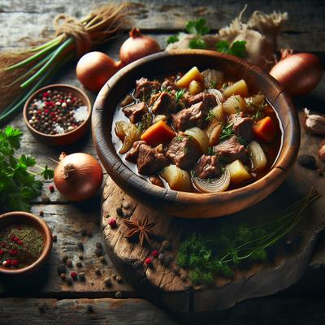

How to Make Hearty Viking Stew

Hearty and rustic, Vikings relied on this traditional stew
to fuel their bodies and souls on harsh winter nights. Bursting with the robust flavors, Viking Stew is traditionally simmered
in a rich broth of beef, lamb, root vegetables, thyme, and juniper berries. This hearty meals perfectly captures
the spirit of the Old Norse hearth--simple, nourishing, and sublime on cold nights by the fire.
Ingredients
Directions
Home